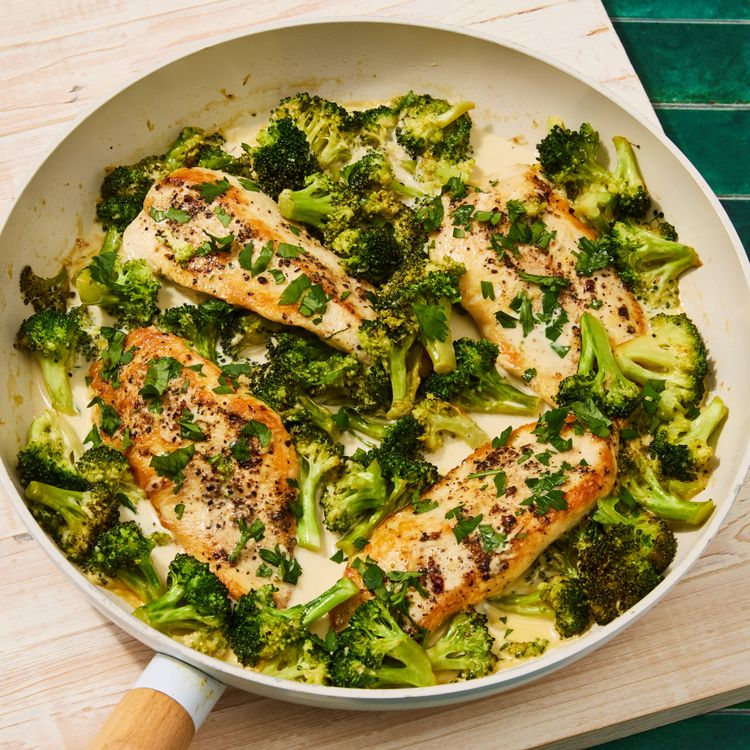

Home
Creamy Garlic Chicken and Broccoli

Credit: Photographer: Alex Huang
Description
This creamy garlic chicken-and-broccoli skillet dinner comes together in just 20 minutes. Tender chicken cutlets
are paired with crisp-tender broccoli in a light garlic cream sauce. A splash of white wine adds depth, while
fresh parsley adds a pop of color and flavor.
Ingredients
- 4 (4-ounce) chicken cutlets
- ¾ teaspoon salt, divided
- ½ teaspoon ground pepper, divided
- 2 tablespoons extra-virgin olive oil, divided
- 3 large cloves garlic, grated
- ½ cup dry white wine
- 4 cups chopped broccoli florets
- ½ cup heavy cream
- Chopped fresh flat-leaf parsley, for garnish (optional)
Steps
- Sprinkle 4 chicken cutlets with ½ teaspoon salt and ¼ teaspoon pepper. Heat 1 tablespoon oil in a large
skillet over medium heat. Add the chicken; cook, turning once, until browned and an instant-read thermometer
inserted in the thickest part registers 165°F, 6 to 8 minutes. Transfer to a platter and loosely cover with
foil to keep warm.
-
Add 4 cups broccoli and the remaining 1 tablespoon oil to the skillet. Increase heat to medium-high; cook,
stirring occasionally, until the broccoli is lightly seared and bright green, about 1 minute. Stir in grated
garlic; cook, stirring constantly, until fragrant, about 30 seconds. Add ½ cup wine; cook until slightly
reduced, about 30 seconds.
- Reduce heat to medium and stir in ½ cup cream and the remaining ¼ teaspoon each salt and pepper. Simmer
until the broccoli is tender-crisp and the sauce is slightly thickened, 3 to 4 minutes. Spoon the broccoli
and sauce over the chicken. Garnish with parsley, if desired.